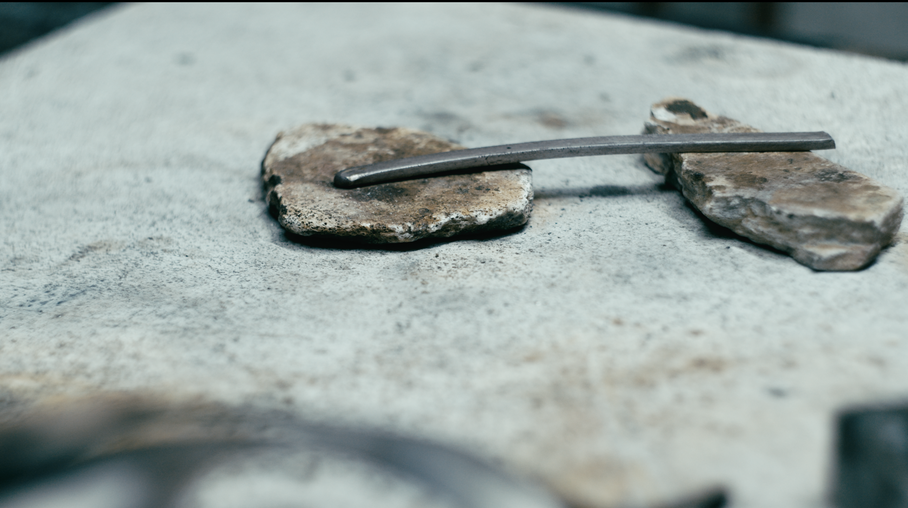

Concept
Individuiamo il nucleo narrativo del progetto e definiamo tono, ritmo e punto di vista.

In un mondo saturo di immagini, non basta mostrare un progetto. Bisogna renderne percepibili il tempo, la materia e il carattere.
Costruiamo racconti visivi per architettura, design, artigianato, hospitality e brand contemporanei.

Ogni fotogramma
è una scelta.
Individuiamo il nucleo narrativo del progetto e definiamo tono, ritmo e punto di vista.
Progettiamo inquadrature, luce, spazio, gesto e presenza con una regia coerente.
Trasformiamo il concept in immagini, mantenendo precisione e sensibilità sul set.
Montaggio, sound design e color grading completano l’identità cinematografica.
Costruiamo insieme
la sua presenza.